If by = NULL plot_timeseries returns a ggplot object.
Otherwise it returns a list of ggplot objects.
plot_timeseries(
data,
by = NULL,
y0 = TRUE,
size = 1,
messages = getOption("wqbc.messages", default = TRUE)
)| data | A data frame of the data to plot. |
|---|---|
| by | A character vector of the columns to plot the time series by. |
| y0 | A flag indicating whether to expand the y-axis limits to include 0. |
| size | A number of the point size. |
| messages | A flag indicating whether to print messages. |
plot_timeseries(ccme[ccme$Variable == "As", ])
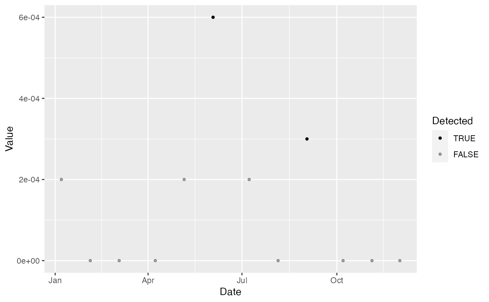
plot_timeseries(ccme, by = "Variable")
#> $DO
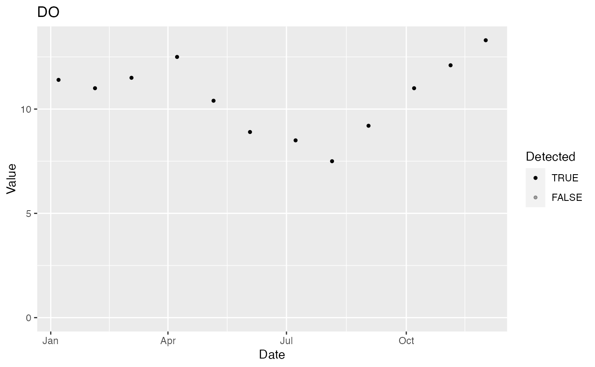
#>
#> $pH
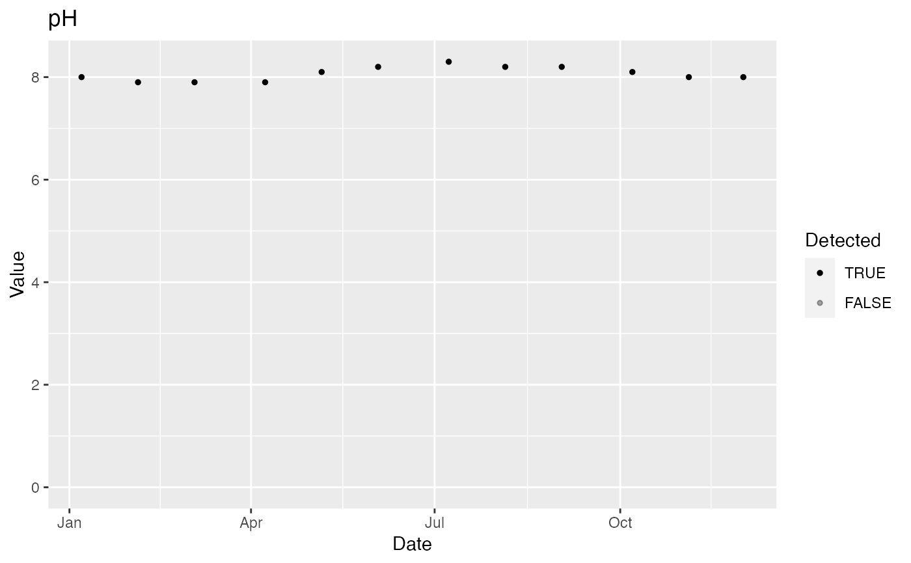
#>
#> $TP
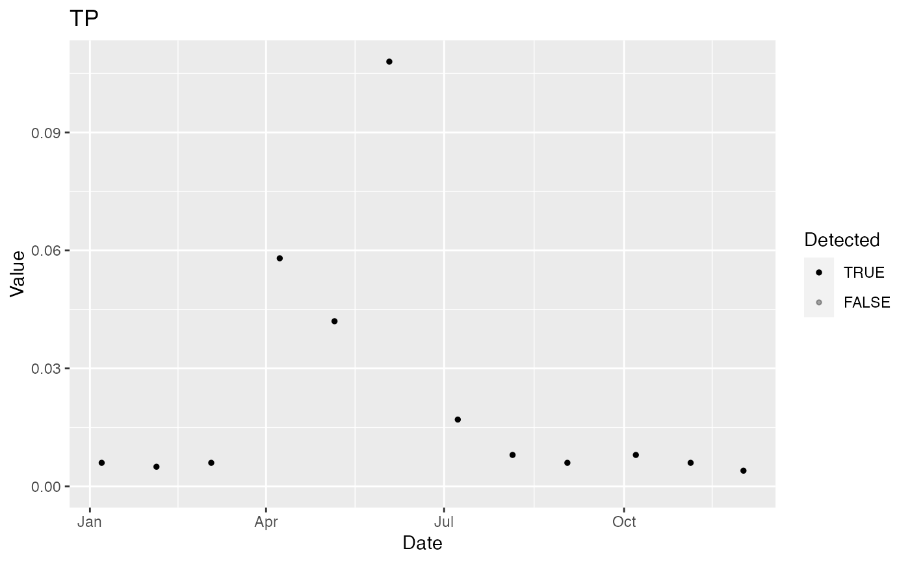
#>
#> $TN
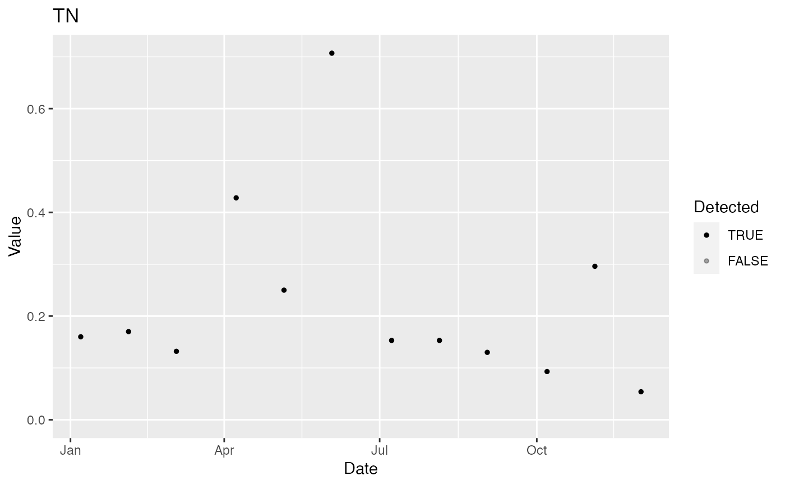
#>
#> $FC
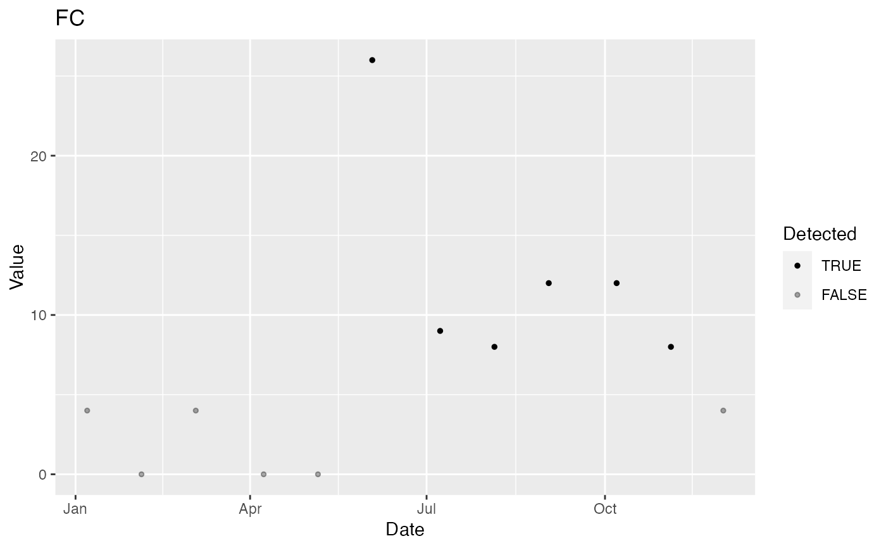
#>
#> $As
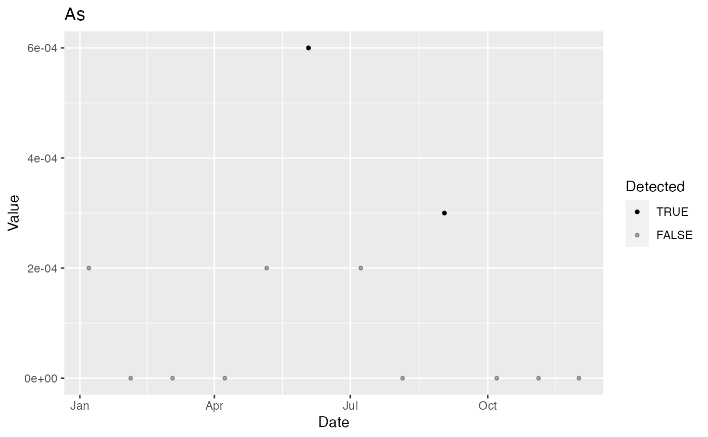
#>
#> $Pb
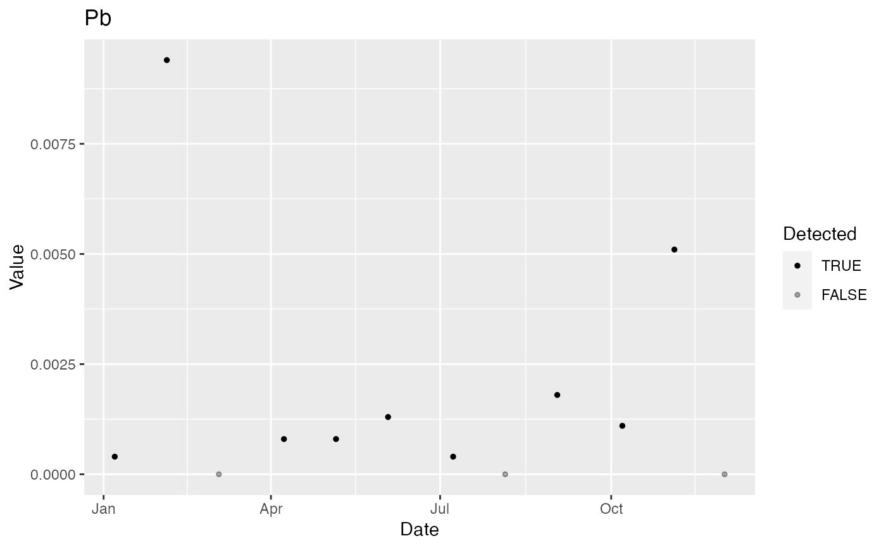
#>
#> $Hg
#> Warning: Removed 1 rows containing missing values (geom_point).
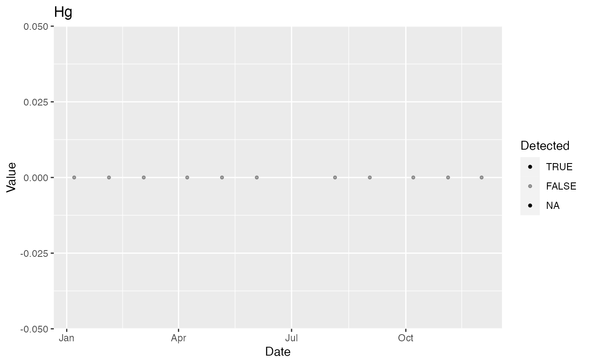
#>
#> $`2,4-D`
#> Warning: Removed 8 rows containing missing values (geom_point).
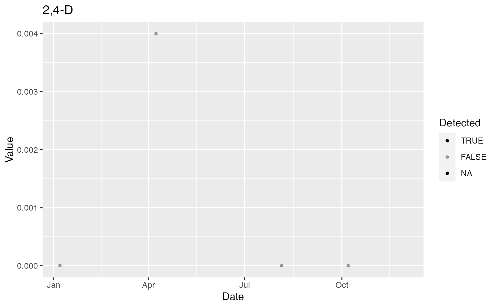
#>
#> $Lindane
#> Warning: Removed 8 rows containing missing values (geom_point).
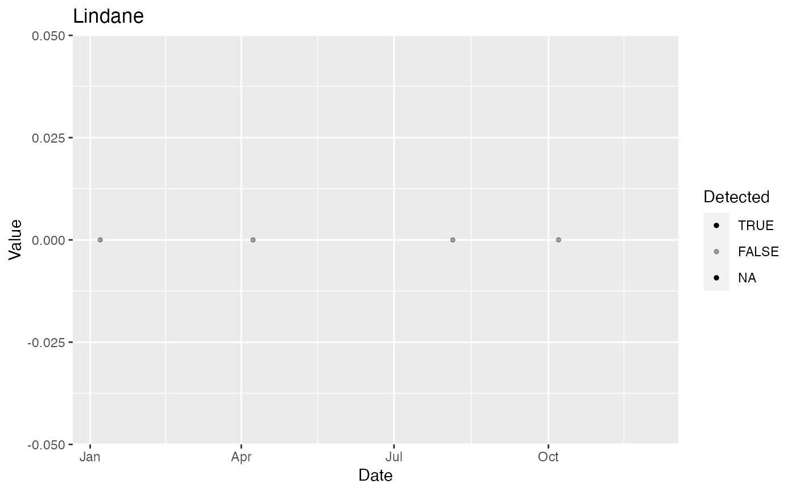
#>
#> attr(,"split_type")
#> [1] "data.frame"
#> attr(,"split_labels")
#> Variable
#> 1 DO
#> 2 pH
#> 3 TP
#> 4 TN
#> 5 FC
#> 6 As
#> 7 Pb
#> 8 Hg
#> 9 2,4-D
#> 10 Lindane